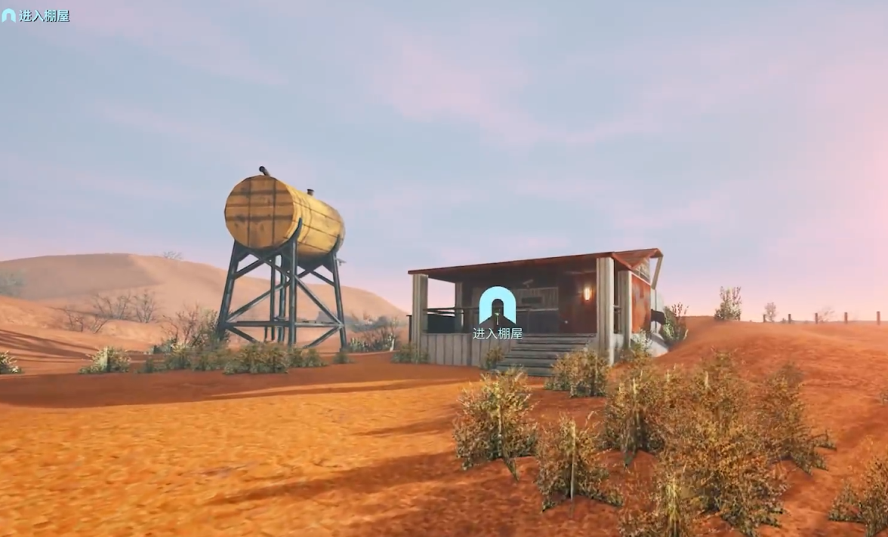
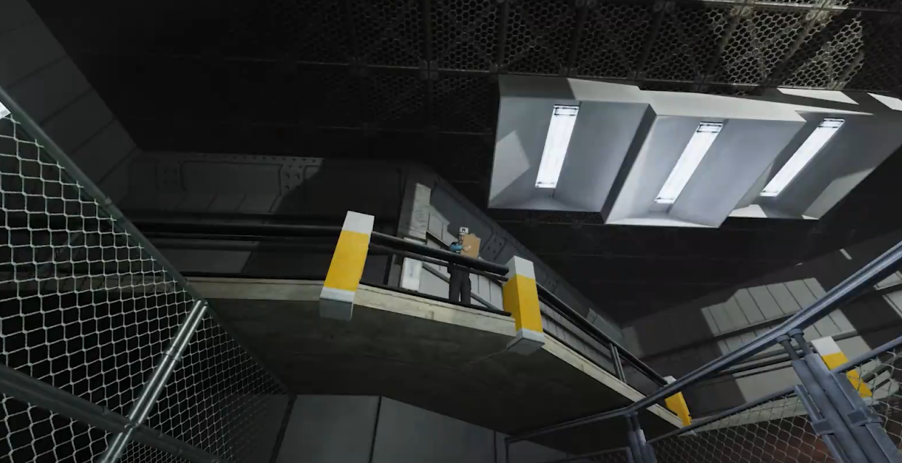

(I) Game Settings
- Initial Setup
- Choosing Jobs and Traits
- Onboarding
- Training


Abiotic Factor is a survival crafting experience that challenges players to survive and thrive in the depths of an underground research facility. With a focus on realistic survival mechanics, team-based progression and a rich collection of research options, Abiotic Factor forces players to think like scientists in a video game.
The game was released on May 2nd, 2024 to an Early Access public. Full release is targeted for Spring 2025 on both PC and console.

Configure your preferred parameters, including world name, language, system configuration, standby screen, and other settings.
Each job corresponds to different skills and initial attribute points. Skills have both positive benefits and negative impacts. You can choose a job that suits your playstyle for experimentation.
It is recommended to select a job as a "Lab Assistant". The overall ability is relatively balanced and it is the core role that best fits the setting of this world.

This game simulates real life - players need to eat, drink, use the restroom, sleep, and heal injuries in the game. Pay attention to your character's stamina status.
This step follows the story progression. After selecting my job, I'll be driven by Lance to a deserted area in the desert. Walking straight ahead, you'll see a small shack. Follow the security personnel's instructions to complete the onboarding procedures and take the elevator into the company. The company is located underground and is currently operating normally.
After entering the company, someone will provide training. You'll need to perform simple operations to familiarize yourself with the gameplay, such as dismantling boxes, connecting power, and capturing escaped entities. The upper left corner of the game will prompt you what to do currently - just follow the instructions.
Training is interrupted midway, and I'll be sent to the Cafeteria in the Office Sector. Here I'll meet the first scientist NPC who will talk to me and assign a task (opening the cafeteria door).
Here you can obtain the first material [Cloth Scraps], which unlocks 2 new recipes: [Bandage] and [Throwing Net]. These 2 recipes are extremely important - [Throwing Net] helps capture basic entities, and [Bandage] stops bleeding and heals wounds, both essential throughout the game.
Leave the Cafeteria and come to the center of the Office Sector, which is also the center of the entire game map. The Security Officer at the security booth informs you that you can leave here through Manufacturing West. However, the Manufacturing West door is already closed. If you can find a Power Cell, you can use the forklift to pry open the door leading to Manufacturing West. It's said there's a Power Cell on the third floor.
But before doing the next task, we need to build a proper shelter first.
The entire company loses power at 9 PM, and after the blackout, entities and Security Bots roam around, making it quite dangerous. So during the day, you must have sufficient supplies and equipment, and these all need to be completed in the game's "home base."
So the urgent priority is to find a safe place to settle down and make some food, drinks, and equipment to facilitate better exploration.
The residential area needs complete facilities around it, including water sources, restrooms, convenient access, power supply, storage lockers, etc. Initially, you can choose places with complete facilities like the Kitchen or Gym, and later move to other locations as the map gets larger.
Currently, we're on Level 2. All stairs and elevators are blocked. You need to find a flooded office, prepare some tables and chairs as stepping stones, jump through the tables and chairs to reach the ceiling above, go through the ceiling to reach the stairwell, and step on the handrail to jump up to reach Level 3.

Dr. Mayfield on Level 3 tells us that we can use Security Bot CPUs to craft a Keypad Hacker (Tier 1). We need to eliminate Security Bots - the difficulty isn't very high. The pool on Level 1 is an invincible position, and the forklift on Level 2 is also a good position before the door opens. Whether you use traps or crossbow bolts, you can eliminate the bots.
It's recommended to use crossbow bolts to practice proficiency. You need three Security Bot CPUs in total to make one Keypad Hacker.

Get the Power Cell, use the Keypad Hacker to open the keypad door on Level 3, then open and enter the portal, and we'll arrive at the Flathill Portal World.
Here you need to engage in a chase battle with a giant. It's recommended to carry flashlights and other lighting objects and armor. The difficulty mainly lies in the library and machine room, but as long as you keep running, the giant can't catch up with you. Once you're familiar with the route, there's basically no difficulty.
There are three Power Cells in total in this Portal World. After collecting them all, a portal will open to send us out.
The Office Sector main quest ends here, and next we move to Manufacturing West.
Put the Power Cell into the forklift, and the Manufacturing West door slowly rises. Talk to Varsha to get the task, find The Blacksmith, and talk to The Blacksmith to get the Keypad Hacker (Tier 2) blueprint and a new task [Find the Surface Tunnel].
The Keypad Hacker (Tier 2) requires Military Components, Reinforced Tubing, and a Power Cell. Military Components can be obtained by dismantling radios dropped by eliminated soldiers. Crafting Reinforced Tubing requires Steel Cable, which can be found in this area or exchanged with Military Components.

After crafting the Keypad Hacker (Tier 2), go up from The Blacksmith, turn right into a mine pit, and holy light will guide you to the top. Talk to Hasta to receive the task [Find Frake].
Continue deeper into the mine pit. Walking to the opposite side, you'll see the Tram Station. On the right side, there's a path. Find Frake in the building inside and receive the new task [Get The Blacksmith's Help]. Talk again to learn that you need to repair three Electronic Pumps.
Repairing Electronic Pumps requires exchanging three components with The Blacksmith, two of which require materials from The Train Portal World.
Talk to The Blacksmith to get the Tram Station Key blueprint. After crafting the Tram Station Key, enter the Tram Station and you'll see a portal. Entering it will take you to The Train Portal World. Inside are some soldiers and new materials. Grease and Silver are materials needed for the main quest. Reinforced Tubing can be exchanged for Optical Lens, Grease can be exchanged for Diode, and Solder can be exchanged for Fiber Optic Cable.
Solder needs to be refined by putting Silver and Iron in a pot filled with water. One pot can refine 4 portions of Solder. Following different colored pipes, you can quickly find the three Electronic Pumps that need to be restored.
After installing all the required components, return to the control center in Manufacturing West, press the button, and blow up the Synchrotron. A large hole will appear where the Synchrotron originally existed.
Here, all Manufacturing West tasks are completed, and finally comes the Cascade Laboratories.
Note: The map here will be quite complex. To clarify in advance, centered around the elevator, the area with a bunch of iron doors that can't be opened is the Containment Block, while the adjacent area with obvious human living traces is the Cascade Laboratories.
Entering the big hole will take you to the Containment Block. Note: Clicking on the X-Ray Tower in the Leyak Containment area will unlock a new blueprint.
Take the elevator to Level 2, go to the adjacent Cascade Laboratories, and you can find Abe, who was previously conducting experiments. Talk to him to get the task. Enter the Containment Block and unlock two important blueprints: Keypad Hacker (Tier 3) and Memory Module.
The Keypad Hacker (Tier 3) requires two new materials: Anteverse Gems and Jailbroken CPU. Take the Containment Block elevator to Level 3, explore the red-lit area on the left side completely to get some Anteverse Gems. You can also exchange them here with Anteverse Wheat. As long as you explore this area thoroughly, materials won't be lacking.
Jailbroken CPUs need to be obtained by eliminating advanced Security Bots in the Containment Block. Advanced Security Bots are faster, but with sufficient firepower, they can still be easily taken down. The Electric Sprayer is recommended here - it's very effective against bots. Collect their materials to craft the Keypad Hacker (Tier 3).

Before entering the Portal World, it's recommended to prepare three bridges and various lighting tools.
Take the Containment Block elevator to Level 3, go to the yellow room on the right side. There's a hole inside that can drop you to Level 2. On Level 2, open both front and back doors - the button opens the main door, while the Keypad Hacker opens the main quest path. Going deeper inside, you can see many locked iron doors. Two rooms can provide two items: one is a Shotgun, the other is the more important Gravity Dampener.
Come to Level 2, press the switch to open the door deep in the Containment Block. After entering, turn right to enter a bright tunnel. Walk straight to the depths and you'll meet Dr. Kahn, who claims he accidentally locked himself in the Containment Block. After talking, get the main quest [Go to Control Center].
Return to the tunnel entrance. Here we can't go forward because there will be machine gun fire. Take out the prepared bridges, build a path to the opposite side, go through the pipeline to enter inside. There are many zombies inside and a portal. Enter to start the Zombie Portal World.
Note: It's recommended to prepare various lighting tools here.
Enter the portal to arrive at a residence with three basement levels. We need to find 5 devices in this residence and press the switches, with zombies interfering in between. Each time we enter the Portal World, we'll randomly appear in various places, so carpet searching is recommended to avoid missing anything.
After pressing the switches on the five devices, take the elevator in the middle of Level 1. Going up, you can see another portal. Cross the portal and we return to the Containment Block.
Note: Never use your personal teleporter to go home directly here, and don't slide down the zipline. You must take the elevator down once. If you don't take the elevator, you won't unlock the shortcut, and you won't be able to take the elevator up from below. This means you'll have to go through the Zombie Portal World again.

In this room, there's a locked door that requires four Leyak Essences. Activating the device on the nearby wall unlocks the X-Ray Light blueprint. Now we can go home and hunt Leyaks.
After returning home, craft the previously unlocked X-Ray Camera. We can make it handheld or use trap mode - the effect is the same.
How to summon Leyaks? When attacking Level 3 earlier, we got a Greyeb Seed. Plant it, and after it matures, you'll harvest Greyeb. Eating it will attract Leyaks. While the effect lasts, Leyaks will continuously appear. If you can't wait for a Leyak for a long time, the server is lagged - restart the game. After eating Greyeb, Leyaks will definitely appear.

Note: It's recommended to prepare powerful firepower and Jump Boost devices here.
After killing four Leyaks and obtaining four Leyak Essences, you can return to the zombie area deep in the Containment Block on Level 2. Take the elevator to this locked door, insert the four Leyak Essences, and use the Keypad Hacker to open the door.
There will be many soldiers waiting for us ahead, so after entering, walk along the wall and be careful not to get hit by machine gun fire. Take the left path, where there's an elevator to Level 2. Note: don't rush in directly here - there will be a machine gun firing inside. In this ruins area, you can throw grenades or use items as stepping stones with Jump Boost devices to jump up. After going up, kill the soldier with the machine gun, and the path will be clear when you come back.
Come to the central passage to reset the security system. The machine gun below will start attacking soldiers, and Dr. Kahn will teleport behind us. Talk to him to receive the main quest.

Note: This involves fighting a boss, so prepare Electric Sprayers and melee weapons.
Entering the Security Room requires going through the Vacuum Chamber, but the Vacuum Chamber door is covered with webbing and requires Anteverse Burn Agent. The Anteverse Burn Agent blueprint is on Level 2 of the Cascade Laboratories. We go up the stairs and turn right, in the Tram Station inside. After entering, on the right side is a computer with the Anteverse Burn Agent blueprint.
Anteverse Burn Agent requires Anteverse Gel and Laboratory Furnace. The Refined Carbon in the Laboratory Furnace can be obtained in the red area on Level 3 of the Containment Block, while Anteverse Gel needs to be obtained from the Mycofields.
Level 5 of the Containment Block has a Mushroom Room where we learn that Tarasque Pus is needed. How to obtain Tarasque Pus? Go deep from Level 2 of the Containment Block to places we haven't entered before, and walk straight to the iron door where the big boss is.
The elimination method is simple: first attack the tentacles on the boss's chest to knock the boss down, then attack the boss's back while it's down. Repeat this about three times and the boss will be eliminated. If your condition isn't good midway, you can run out through the half-open iron door, because the boss can't pass through the iron door, giving us time to recover. Dissect the boss to get Tarasque Pus.

Come to the Mushroom Room on Level 5, insert the pus, open the portal, and enter the Mycofields Portal World.
Note: It's highly recommended to carry Oscillating Gravity Cubes and Jump Boost devices here, and it's best to prepare several more Armor Gravity Cubes. The crafting method is simple - you need the Gravity Dampener obtained earlier in the Containment Block and Chains. Chains are obtained by dismantling the pocket watch obtained from The Train Portal World.
Enter the Mycofields - it's a large parkour course requiring climbing and jumping. Collect Anteverse Gel everywhere and head toward the highest terrain. Normal progression all the way is fine.
At this location, people without Gravity Cubes can't jump up. You need to prepare Jump Boost devices, or have teammates who jumped up throw Gravity Cubes down.
Come to the highest point and jump lightly to teleport back. Return home and use ten Anteverse Gels to make Anteverse Burn Agent.
From Level 2 of the Containment Block, go all the way up to the Vacuum Chamber door, install the Anteverse Burn Agent, and open the door.
More exciting content keeps being updated.


This is currently one of my favourite games online to play. It plays like Half Life if you could do survival adventure game inspired by the likes of Half Life, SCP, some dark, fun mechanics, and great atmosphere.
1 week agoThis is one of those games that you just want to keep playing and playing. Such great narrative, design, gameplay. Love it.
6 days agoOne of the best games of its genre in the last decade.Gives many AAA titles a run for their money for their in depth gameplay, exploration, lore and progression.
5 days agoThe game might be ok but price hiking your game when more are about to be on it from game pass/playstation plus is ridiculous. Terrible devs that don't deserve recognition now.
1 week agoHalf-life 1 with a deeper story and survival aspects. I am enjoying this immensely.
1 week ago